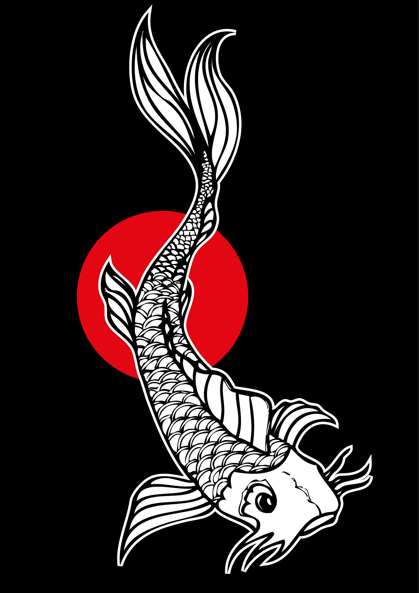
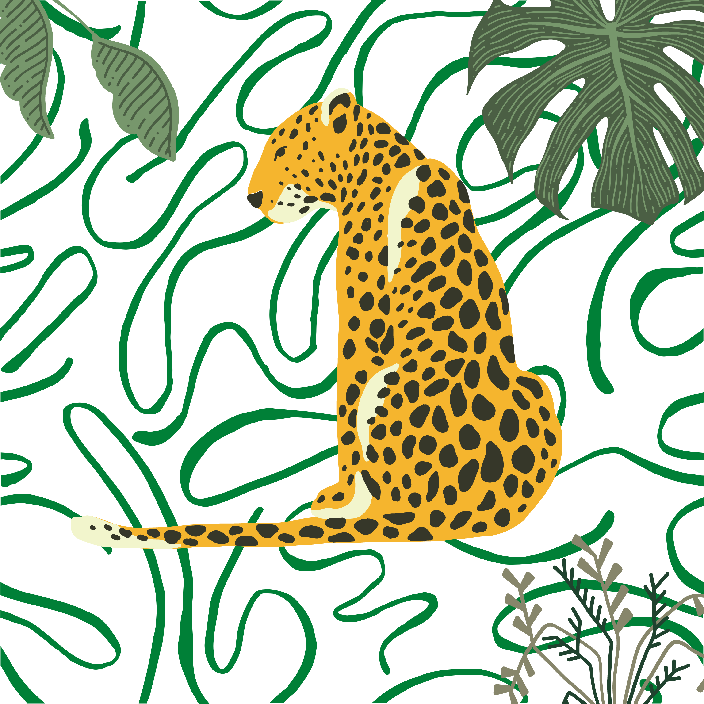
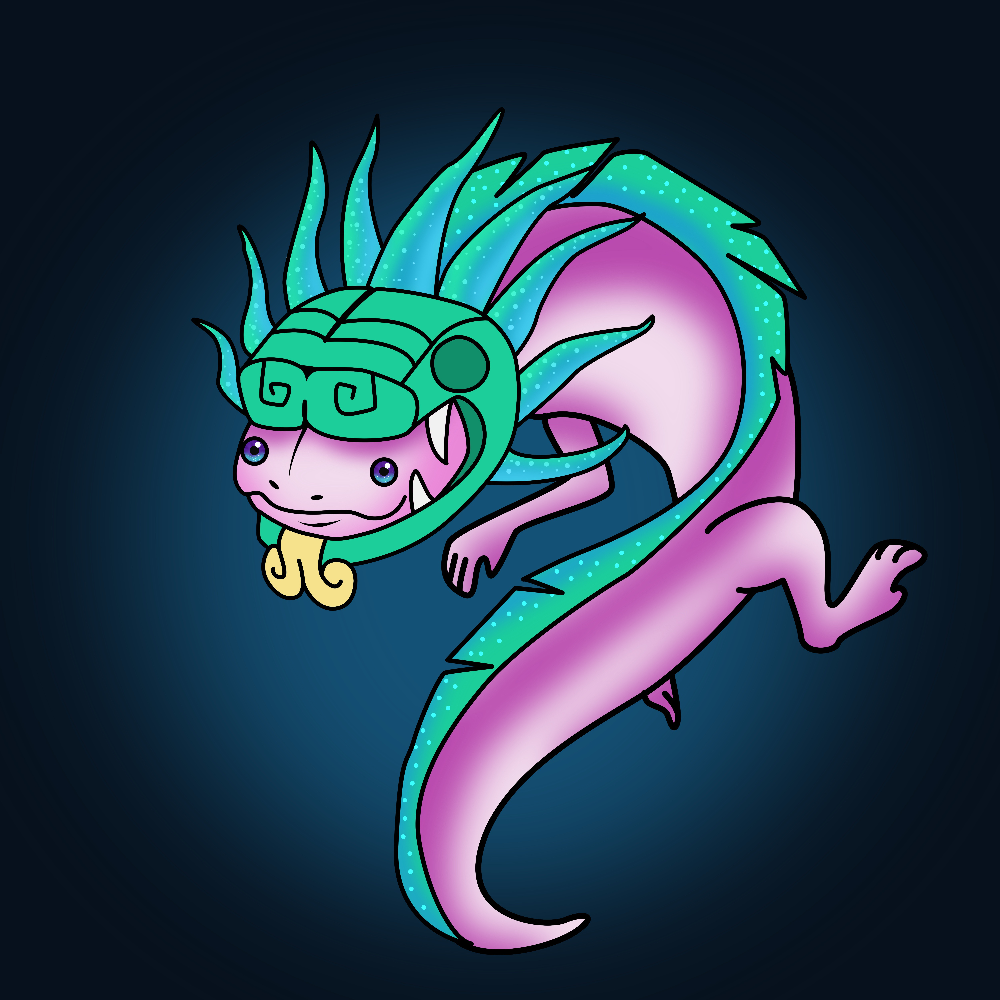
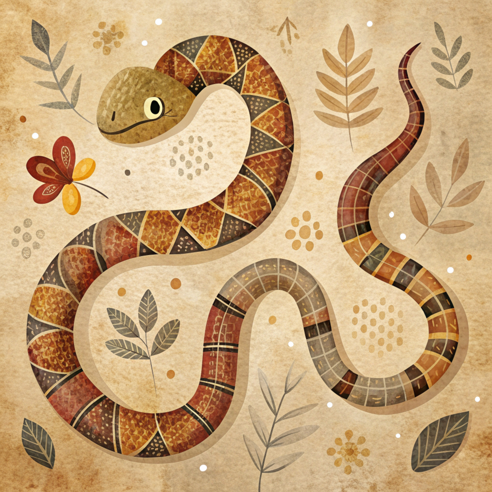
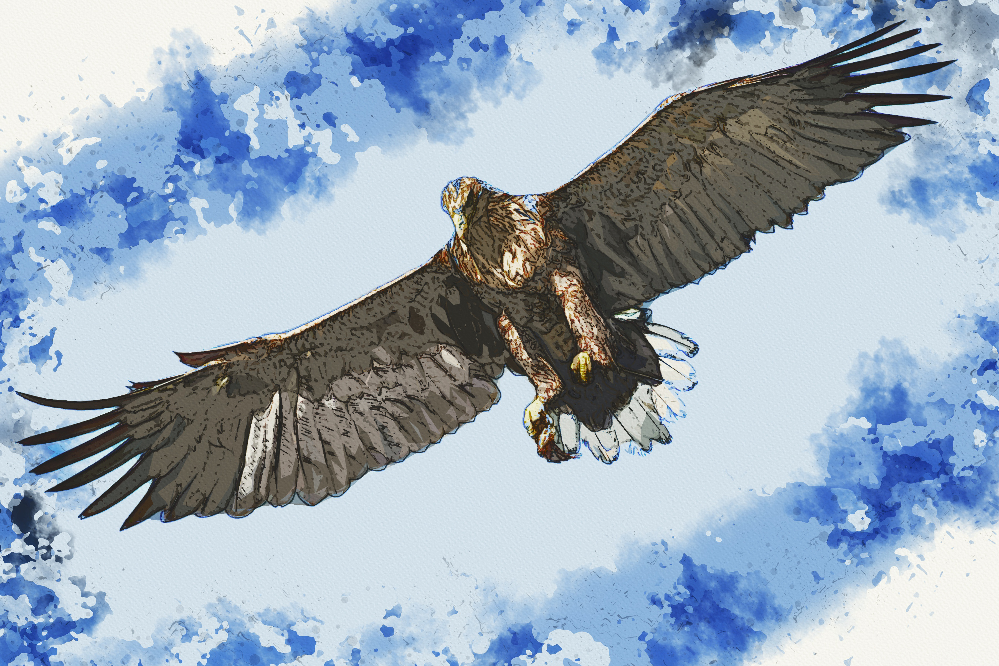
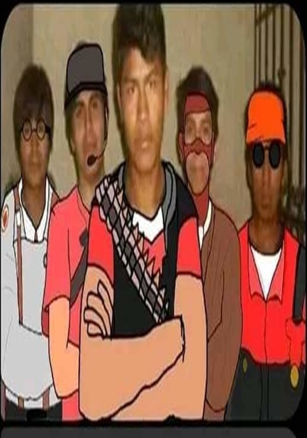

ANIMALES

Los peces son animales vertebrados acu ticos, mayoritariamente ectot rmicos (sangre fr a), que respiran a trav s de branquias y utilizan aletas para desplazarse. Poseen columna vertebral, piel generalmente cubierta de escamas y viven tanto en agua dulce como salada. Se clasifican principalmente en seos y cartilaginosos (como tiburones).

Los mam feros son una clase de animales vertebrados, de sangre caliente (homeotermos), caracterizados por tener el cuerpo cubierto de pelo, respirar mediante pulmones y, fundamentalmente, por alimentar a sus cr as con leche producida por gl ndulas mamarias. La mayor a son viv paros (nacen del vientre materno) y habitan en entornos terrestres, acu ticos y a reos.

Los anfibios son animales vertebrados ectotermos (sangre fr a) caracterizados por una "doble vida" que divide su ciclo vital entre el agua (fase larvaria con branquias) y la tierra (fase adulta con pulmones). Pertenecen a la clase Amphibia y destacan por su piel h meda, suave y sin escamas, la cual utilizan para respirar.

Los reptiles son animales vertebrados terrestres o acu ticos, caracterizados por tener la piel seca, cubierta de escamas o placas, y ser ectotermos (de sangre fr a), lo que significa que dependen del entorno para regular su temperatura corporal. Respiran mediante pulmones, son mayoritariamente ov paros y se caracterizan por reptar o arrastrarse.

Las aves son animales vertebrados endot rmicos (de sangre caliente) caracterizados por tener el cuerpo cubierto de plumas, un pico c rneo sin dientes, huesos huecos y extremidades anteriores modificadas como alas. Son ov paras (ponen huevos), la mayor a puede volar, y descienden directamente de los dinosaurios ter podos.
